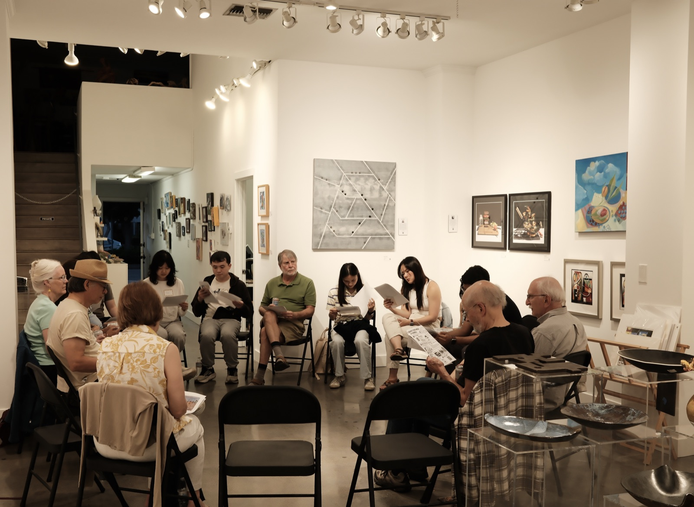

Through Another's Eyes
On perception, imagination, and the worlds we create
What would the world look like through the eyes of a bird, a rabbit, or a dog?
At our sixth AIC gathering, we explored this question by imagining how different animals might experience the same world, then bringing those perspectives to life through AI.

We began with a simple idea: the world we see is not necessarily the world as it is.
Our senses shape what we notice. Our experiences influence what matters to us. Even when we share the same physical environment, we may experience entirely different realities.
But something unexpected happened when participants began choosing which animal's perspective to explore.
The bird group was drawn to the freedom of seeing from above. From the sky, familiar surroundings could become something entirely different.
The rabbit group imagined a more playful world, shaped by movement, jumping, and the possibilities of seeing from closer to the ground.
The dog group took another direction. Rather than simply recreating what a dog might physically see, participants wanted to express emotions, exaggerating the feelings and energy of dogs throughout a park.
These choices revealed something interesting.
When we try to imagine another creature's world, we inevitably bring our own imagination into it.
We may never know exactly what it feels like to be a bird, a rabbit, or a dog. But the attempt to see differently invites us to question what we normally take for granted.
Using AI world-building tools, each group translated its ideas into a visual environment.
The results were not scientific reconstructions of animal perception. They were imaginative interpretations shaped by human curiosity, experience, and creative choices.
And perhaps that distinction matters.
AI can help us visualize unfamiliar perspectives, but it does not automatically tell us whether those perspectives are accurate. What it creates depends, in part, on the assumptions and intentions we bring to it.
The exercise became more than an experiment in AI art. It became an exploration of the relationship between perception and imagination.
We often assume that the world looks the same to everyone, and that differences arise only in how we interpret it.
But perhaps understanding another perspective begins earlier, with recognizing that others may notice, sense, and value things we overlook entirely.
To see through another's eyes is not necessarily to see what they see. It is to become more aware of the limits of our own vision.
And sometimes, that awareness is where creativity begins.
Thank you to everyone who joined AIC #6 at Gallery House and contributed their imagination, curiosity, and creative experiments.
Explore the worlds created during this workshop: AIC #6 Creative Outputs.